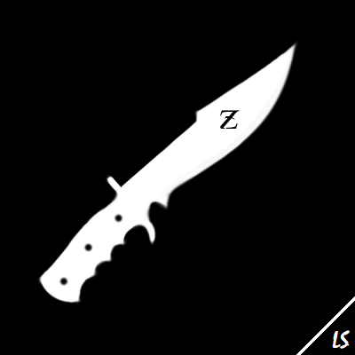
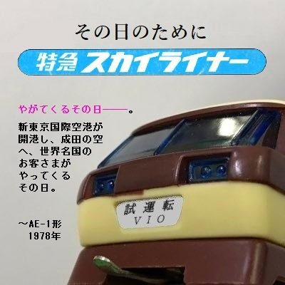

サイト管理者
Here are the people who developed this website, and reviewed the products.
Zwilling
| Positional Rank / 隊員 | Chieftain / 社長 |
| Country / 国名 | Germany, Czech Republic |
| Gender / 性別 | Female |
| Age / 年齢 | 26 |
| Interests / 関心 | プラレール、プラハイウェイ |
| @LS_Zwilling |
Comments / コメント:
Greetings! I am the entrusted successor of my best friend, Vio, as of September 2022. You can also call me by my name, Emily Kruger. As a former Plarail Czech Expo admin from 2015 to 2017, I have continued Plarail as my hobby even though the availability of Plarail in EU is close to zero these days. Vio founded Light Sleepers research team in 2020 and I joined the cult when it was first established. During my stay, Vio has been teaching the public about his constant discoveries of Pla Highway, and I naturally became interested in it too. The first Pla Highway product that I played with is the ハイウェイぜんじどうふみきりセット which was owned by a friend living in France, but I wasn't aware about the existence of Pla Highway even during that time. These days Pla Highway fascinate me more than Plarail, and I have been hunting them down aggressively.

Vio
| Positional Rank / 隊員 | Sub-Chieftain & Founder / 取締役・創設者 |
| Country / 国名 | Malaysia, Singapore |
| Gender / 性別 | Male |
| Age / 年齢 | 35 |
| Interests / 関心 | プラレール、プラハイウェイ |
| @LS_Vio |
Comments / コメント:
I am the original founder of the Light Sleepers research team since 2020. It has been a long journey indeed! I started my Plarail journey since I was a young child, but unfortunately almost every Malaysian and Singaporean stop the Plarail hobby when they reach their teen years. My interest in Pla Highway has grown ever since I obtained the 新国際空港セット in late 2020, and my first true Pla Highway product that entered my collection is the きょくせん部品No.2, さか部品No.3, and ポイント部品No.4. From there, the Pla Highway journey has expanded. Zwilling and I have been sending Pla Highway products among ourselves since late 2022 just before the 2022 Czech expo took place. Light Sleepers research team had expanded into the Pla Highway field since mid 2021, and we decided to continue on this path till today.
なみだ9
| Positional Rank / 隊員 | Deep Web Analyst & Searcher / 部長 |
| Country / 国名 | 日本 |
| Gender / 性別 | 男性 |
| Age / 年齢 | 18 |
| Interests / 関心 | プラハイウェイ |
| @LS_namida9 |
Comments / コメント:
プラハイウェイとともに幼少期を過ごしました。宿題が終わるとおじいちゃんがプラハイウェイNO.1とプラハイウェイNO.2を貸してくれました。おじいちゃんはダブルハイウェイに関する多くの噂や伝説を話してくれました。同級生たちはいつもプラレールの話をしていましたが、私はプラレールのことを何も知らないので、どうしても同級生と仲良くなれませんでした。そんな変わり者の私ですが、幸いにも同じ趣味を持つ小さな仲間に出会えました。その仲間たちがLS研究チームです！LS研究チームのことを知ったのは1年近く前にVio兄貴がYouTubeの動画を積極的に公開していた時です。徹底的に面接を受け、1週間後にようやく盟約を受け入れるかどうかの選択を迫られ、それを受け入れました。1年前にLS研究チームに参加して以来、Discordでプラハイウェイ製品のレビューをしたり、ディープウェブやダークネットで暗号化されたサイトやアーカイブを閲覧して、トミー製品について調べたりしています。旅は時にとても容赦なく、やりがいのあるものですが、LS研究チームに恵まれたことに満足しています！